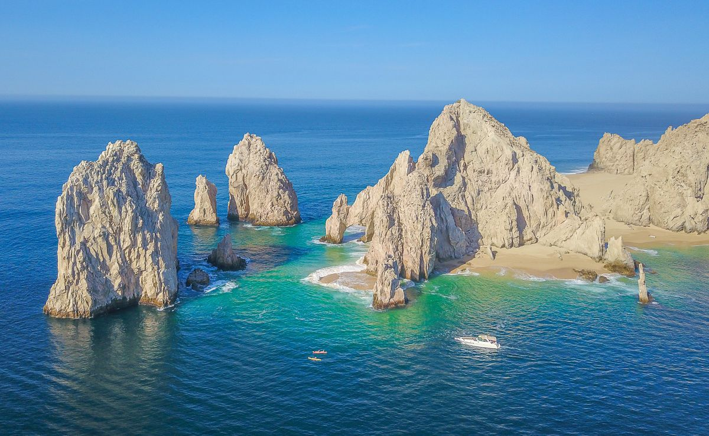
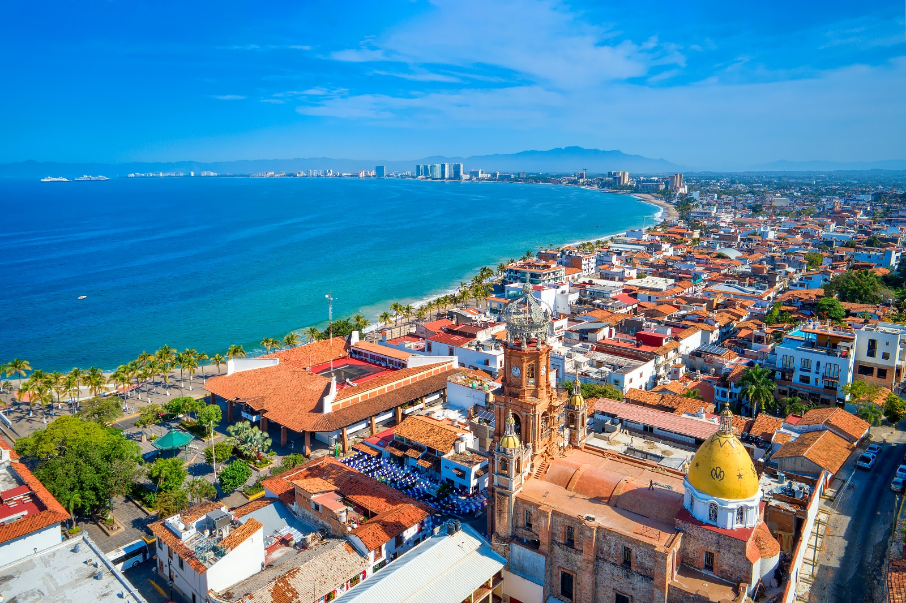

Lugares para visitar:
 Ciudad de Mexico
Ciudad de Mexico Cancún
Cancún- Los Cabos
- Puerto vallarta
Itinerario:
En 5 dias y 4 noches en cancún se puede realizar una visita a la isla de mujeres, visitar el MUSA, descubrir las piscinas naturales y tesoros del parque Xcaret, visitar cozumel en barco y practicar deportes extremos por la ruta de los cenotes.
Costos de viaje:
- Hotel estadia completa -> $200
- Comidas externas por dia -> $30
- Traslados por dia -> $5
- Ingresos y actividades -> $40
- Costos adicionales -> $30